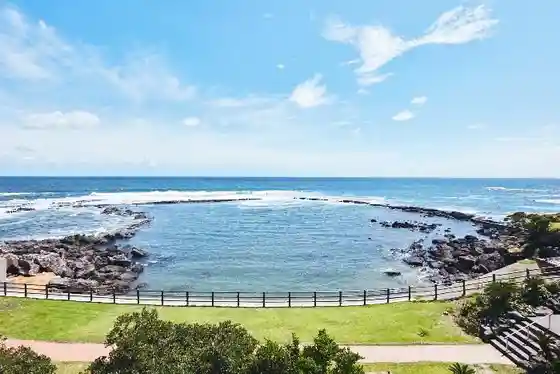
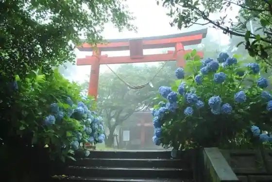
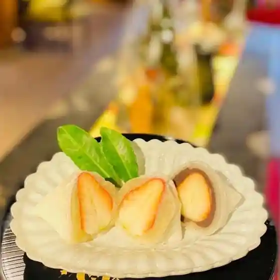

Sehira Park
Minamikyushu, Kagoshima · 0993-83-2511 · Official / source link
Bansho Hana Nature Park (band park)
Minamikyushu, Kagoshima · 0993-83-2511 · Official / source link

Ono Gaku Shrine
Minamikyushu, Kagoshima · 0993-36-1111 · Official / source link

Roadside Station Kawabe Yasuragi no Sato
Minamikyushu, Kagoshima · 0993-58-3131 · Official / source link
Shimizu Iwaya Park Campground
Minamikyushu, Kagoshima · 050-3529-6424 · Official / source link

Shimizu Magai Hotoke
Minamikyushu, Kagoshima · 0993-83-4433 · Official / source link
Otokyanpu Mori no Kawanabe
Minamikyushu, Kagoshima · 050-3529-6424 · Official / source link
Shimizu no Yusui
Minamikyushu, Kagoshima · 0993-83-2511 · Official / source link
Chiran Buke Yashiki Teien Gun
Minamikyushu, Kagoshima · 0993-58-7878 · Official / source link
Chiran Tokko Heiwa Hall
Minamikyushu, Kagoshima · 0993-83-2525 · Official / source link
Museum Chiran
Minamikyushu, Kagoshima · 0993-83-4433 · Official / source link
TEALAN Satsuma Eikoku Kan
Minamikyushu, Kagoshima · 0993-83-3963 · Official / source link
Chiran Tenisu no Mori Park
Minamikyushu, Kagoshima · 0993-83-1030 · Official / source link
Toyotamahime Shrine
Minamikyushu, Kagoshima · 0993-83-4335 · Official / source link
Soba Uchi Dojo Fukiage Iori Sanryo Kan
Minamikyushu, Kagoshima · 0993-83-1555 · Official / source link
Chiran Heiwa Park
Minamikyushu, Kagoshima · 0993-83-2511 · Official / source link
Suwa Sports Park
Minamikyushu, Kagoshima · 0993-56-1441 · Official / source link
to Yuki Ike Park
Minamikyushu, Kagoshima · 0993-83-2511 · Official / source link
Hatake no Sato Suido Ri Kan
Minamikyushu, Kagoshima · 0993-83-2511 · Official / source link
Takagi Iori
Minamikyushu, Kagoshima · 0993-83-3186 · Official / source link
Sha Tate Hei Shu Shrine (Kama Futa Shrine)
Minamikyushu, Kagoshima · 0993-38-2127 · Official / source link
Ono Gaku Park
Minamikyushu, Kagoshima · 0993-83-2511 · Official / source link
Ocha Ya no Ba Park
Minamikyushu, Kagoshima · 0993-83-2511 · Official / source link
Chiran Sakura Ken Tei
Minamikyushu, Kagoshima · 0993-83-3211 · Official / source link
Hotaru Kan Tomi Ya Shokudo
Minamikyushu, Kagoshima · 0993-58-7566 · Official / source link
Tatsu no Otoshigohausu
Minamikyushu, Kagoshima · 0993-38-1883 · Official / source link
Kinko Dai Tembo Park (Ibusuki Sukai Line)
Minamikyushu, Kagoshima · 099-213-0231 · Official / source link
Chiran Lookout (Ibusuki Sukai Line)
Minamikyushu, Kagoshima · 099-213-0231 · Official / source link
Chiran Kantorii Club
Minamikyushu, Kagoshima · 0993-83-4711 · Official / source link
Chiran Farm
Minamikyushu, Kagoshima · 0993-78-3505 · Official / source link
Kawabe Butsudan Kogei Hall
Minamikyushu, Kagoshima · 0993-56-0240 · Official / source link
Iki Zukurito Umi no Yado Isebi So
Minamikyushu, Kagoshima · 0993-38-0160 · Official / source link
AB CAFE
Minamikyushu, Kagoshima · 0993-38-0160 · Official / source link
Ono Gaku no Fumoto Cha Ya,
Minamikyushu, Kagoshima · 050-3567-1850 · Official / source link
Isohiyokohii
Minamikyushu, Kagoshima · Official / source link
Ei A Town Gun no Kosumosu
Minamikyushu, Kagoshima · 0993-58-7577 · Official / source link
Okubo no Himawari
Minamikyushu, Kagoshima · 090-5489-8690 · Official / source link
Adobencha Park Mori no Kawanabe
Minamikyushu, Kagoshima · 050-3529-6424 · Official / source link
Maeda Ichigo Sono
Minamikyushu, Kagoshima · 0993-84-2182 · Official / source link
Tashiro no Kosumosu Tohimawari
Minamikyushu, Kagoshima · 0993-78-3093 · Official / source link